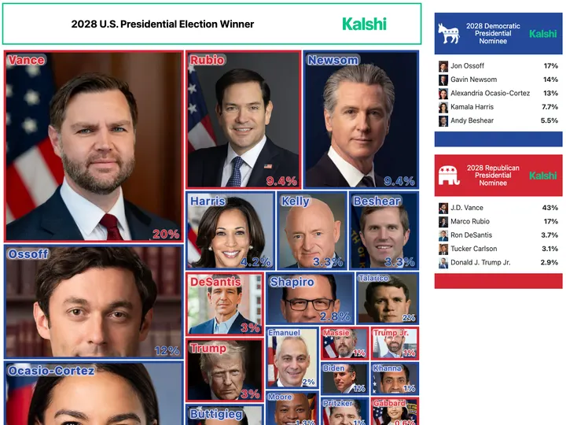
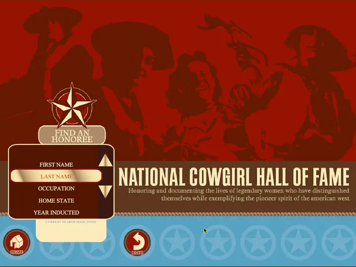
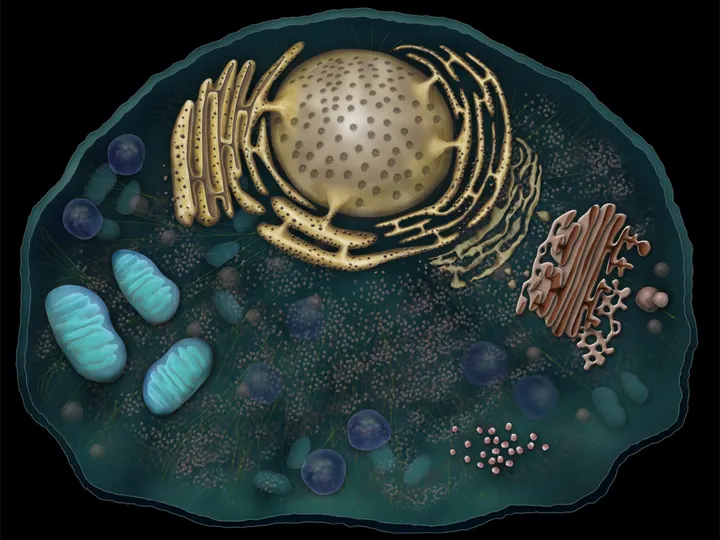
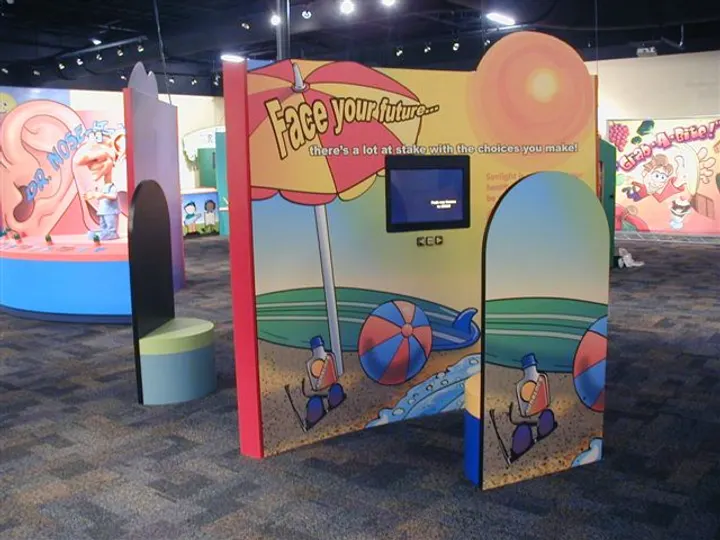
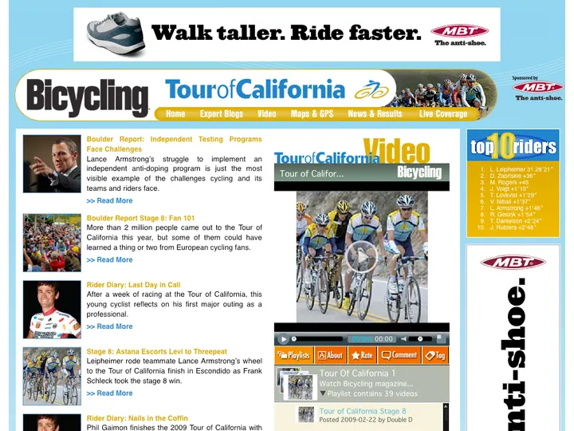
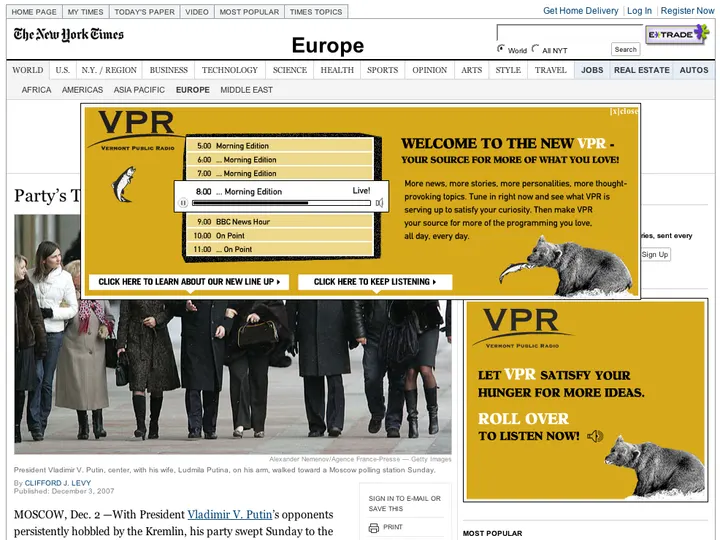
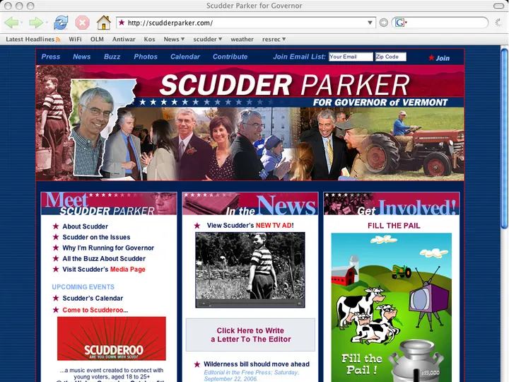
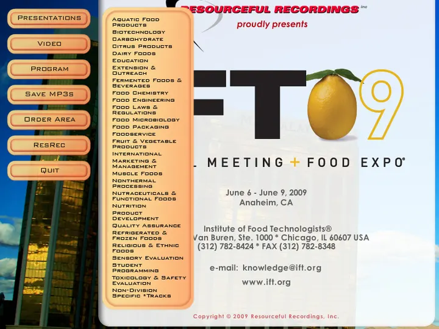
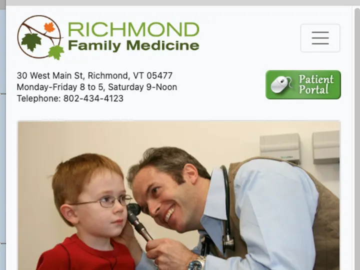

Projects that people click, tap and come back to.
Two decades of work for publishers, health-tech companies, museums and brands. Pick a project for the story behind it, or filter by the kind of work you need.

Case studyLive election maps & prediction-market data
Interactive President, Senate, House and Governor maps, polling dashboards and real-time Kalshi prediction-market visuals for one of the web’s best-known election sites.
 Case study
Case studyWebsite, CMS, help portal & product UI for a health-tech company
A complete digital presence for a home-healthcare platform — from sitemap to WordPress build, help center, internal wiki and the CareTracker touchscreen interface.
 Exhibits & kiosks
Exhibits & kiosksKidtropolis: a kid-sized city with a working bank
A 6,000 sq ft miniature city where kids earn, save and spend — powered by an exhibit-wide banking system and ATMs across 42 networked computers.
Powerplay: fitness tracking across a three-floor exhibit
Kids register, climb, run and balance their way through activity stations while Power Tracker kiosks record their heart rate and fitness measures.
 Exhibits & kiosks
Exhibits & kiosksEnergy Lab: a touring science exhibit in a truck
Earth, Wind, Fire and Water zones with touch tables and custom interactives that teach high-school students about energy use and conservation.
 Exhibits & kiosks
Exhibits & kiosksExploreum interactives
Hands-on interactives for the Exploreum hall, including the Buoyancy station — named one of NYC’s 20 best museum exhibits for kids by Time Out New York Kids.
 Exhibits & kiosks
Exhibits & kiosksVirtual Mold Making in a steel-mill exhibit
Kids pass molds down a conveyor belt; RFID tags trigger video of real molten steel filling the same mold — and the finished cog it produces.

Exhibits & kiosksHonoree kiosks with a curator-friendly database
Four touchscreen kiosks give visitors quick access to the museum’s inductees, all fed from a custom database curators can update at any time.

Exhibits & kiosksExplore an animal cell, layer by layer
A richly illustrated animal cell for a multi-touch table, built in layers so visitors can peel back membranes and explore each organelle.

Media, games & adsFace Your Future & a family of health exhibit games
Interactive software for traveling health exhibits — Face Your Future, Decisions Diner, Grab-a-Bite and Supersize — that make healthy choices playful.
 Media, games & ads
Media, games & adsTrain Signs: a full-body motion game
Players use their whole body to tag the right railroad-safety signs as they pop up around the screen — no controller required.
 Media, games & ads
Media, games & adsVideo entertainment network
An online video network with show pages, episode players and editorial features for a slate of original series.
 Media, games & ads
Media, games & adsStreaming radio player with member accounts
A pop-out streaming player for an internet radio station, with now-playing info, track history, buy links and a members-only ad-free stream.

Websites & CMSTour of California race coverage hub
A dedicated race site for the Tour of California with daily blog coverage, stage video, top-riders features and integrated sponsor placements.
 Web apps & data
Web apps & dataMyPhoneFinder: compare every phone at once
A visual phone-finder: enter a zip code, then slide filters for camera, keyboard, price and more while matching phones light up across a wall of devices.

Media, games & adsRich-media campaign for a new schedule
Animated display ads that walked listeners through VPR’s new program lineup, hour by hour.

Websites & CMSStatewide campaign website
A database-driven campaign site for a Vermont gubernatorial race: news, blog, photo galleries, video and volunteer sign-ups.

Media, games & adsConference session archive for IFT 2009
A navigable archive of recorded sessions from the Institute of Food Technologists’ Annual Meeting & Food Expo, with an online store for orders.

Websites & CMSResponsive sites for local organizations
Clean, mobile-first websites that load fast, read clearly and are easy for small teams to keep current.
Want results like these?
Tell us what you’re planning. We’ll come back with honest advice, a realistic timeline and a clear estimate.